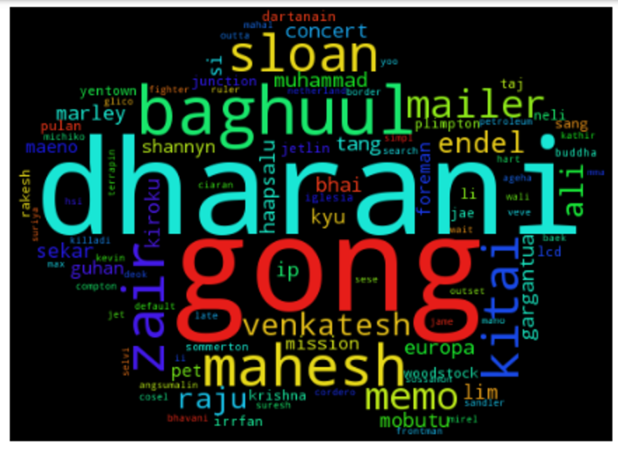
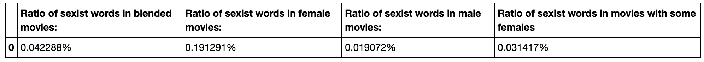

The tasks
In this section, we'll look at text analysis for the project. We do a term frequency - inverse document frequency analysis on all of the movies to create a sort of a movie recommendation system, look at the words generally used for movies based on gender, perform a sentiment analysis and more.
A rating classifier
First, we train a classifier to guess the rating of movies on IMDB based on the words used about them in their user reviews and the movie overviews. We binarize the ratings, and split the ratings on 7.5, since movies on IMDB are generally considered very good if they score higher. Thus, a movie with over 7.5 receives 1 in our binarizer, and a movie with below 7.5 receives a 0. We train the classifier on 90% of our data and get a performance of around 80%, and at the highest, 85%. Although this doesn't seem like a very bad performance, if we look at the number of movies we had in each division, we have 374 movies receiving a high grade and 1823 movies receiving a low grade. If we would guess that every single movie got a lower grade, the classifier would have around 83% performance, that is, a pessimistic classifier (always rating movies as bad) is most often better performing than ours.
A movie recommendation system
First, we perform a tf-idf analysis on our text, and use k nearest neighbour search to be able to make sort of a movie recommendation system. We pick a random movie, and pick the four that are most like it in terms of the words used in user reviews and movie overviews. This can hopefully return similar movies as recommendations.
The movie recommendation system seems to work, as it mainly predicts movies in the same class (pretty bad Adam Sandler movies) for a reasonably O.K. Adam Sandler movie. And one about golf if that's the reason for the user liking Happy Gilmore.
Gender descriptive words
Now, we split the movies on our list up to four groups. The first group consists of movies with a female star, female director, and at least one female writer. The next group consists of all-male movies. The third group has movies that have either a female star or a director and the last group contains the rest of the movies, the blended movies.
3.19% of 2102 movies have a female writer, director and a star while 56.90% of the movies have a male writer, director and a star.
In contrast to before, when we used a built-in Vectorizer to perform our tf-idf analysis, we use our own function now to see which words are most descriptive of our four groups, all-female, all-male, female director/actress and blended.
Looking at this list, the results aren't as clear-cut as maybe expected, even though the all-male list contains some words that might be considered masculine, and are definitely more action-filled. The all-female list contains many female names. This list does not show any sentiment.
Word clouds for the groups
Now let's make wordclouds from the list above:Word cloud for all-female movies
The female word cloud contains mostly proper nouns, names of characters in movies made by women. It's clear from the cloud that Frozen is an all-female movie.
Word cloud for all-male movies
The male also contains mostly proper nouns, but words like slave and agent can be seen.
Word cloud for movies with a female director or star
Word cloud for blended movies
Sentiment analysis
The next step is to perform a sentiment analysis, with a list of words with sentiment scores, previously used in this class. We then compare the sentiment score of each group to the average IMDB rating of the movies in the group.
From this table, we see that movies done by females get the most positive reviews, in regards of sentiment analysis, and also the highest rating on imdb (almost tied with the blended movies). There are though, a lot fewer movies done by women, and less room for mistakes, so it's maybe not surprising that they receive better reviews.
Sexist words used in user reviews
Finally, we have made a list of words, often used in a degrading manner to describe women. We want to see how common they are in user reviews, for each of our groups.
Running this list through our different groups to check how often these words are used, as a percentage of all of the words used, we get:
The results are very clear here. The sexist words are 10 times more likely to be used in reviews about movies made by women than movies solely made by men. The ratio gets higher with more women involved in the movie.